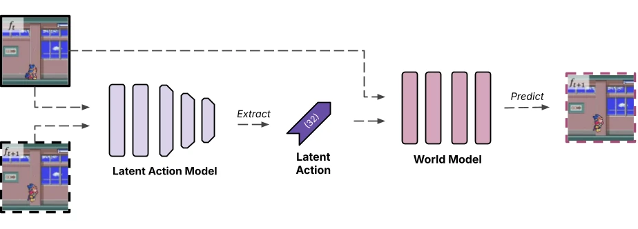
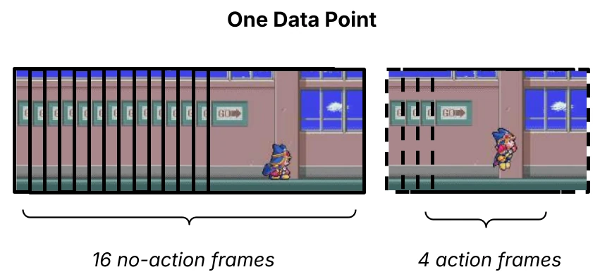
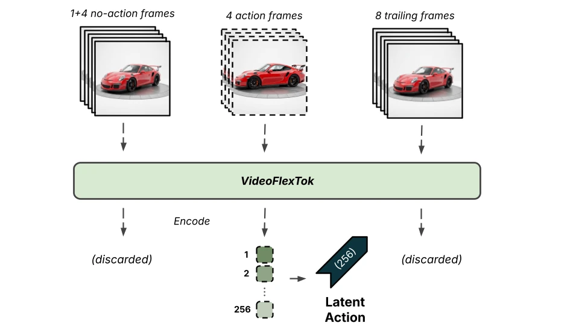
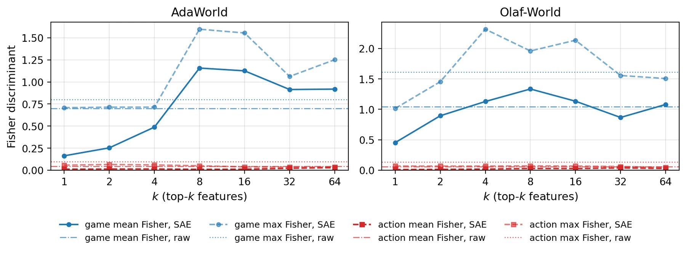
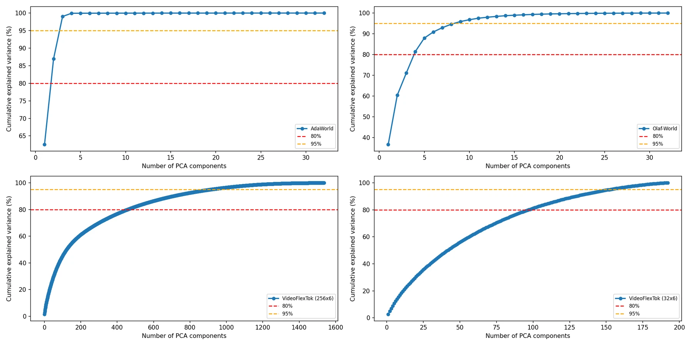
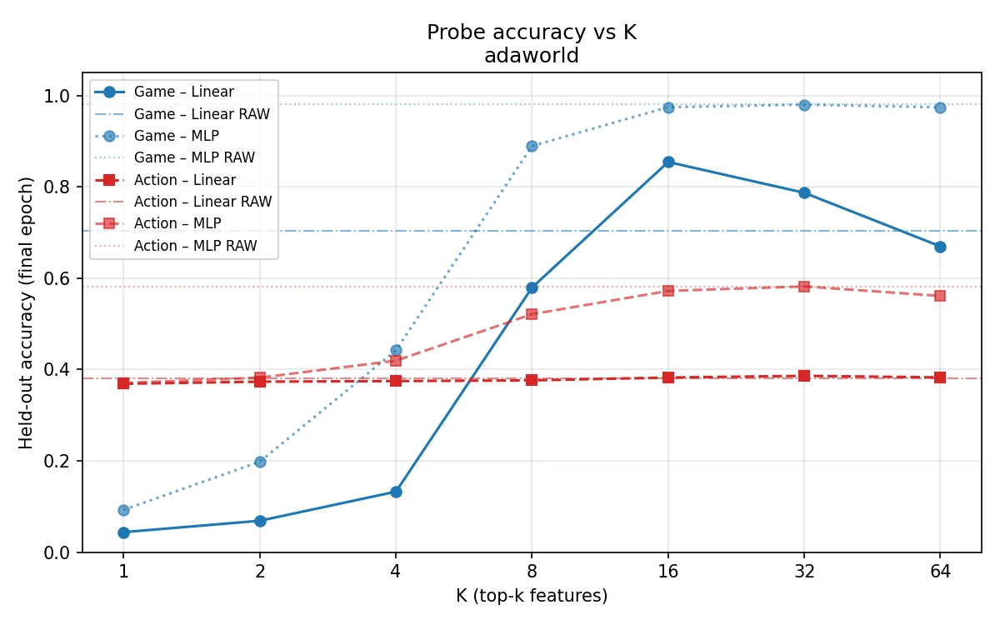
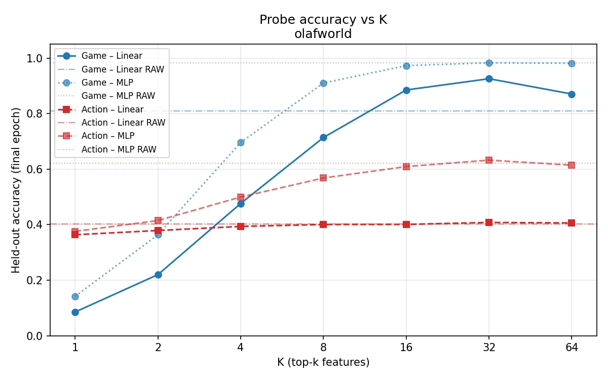
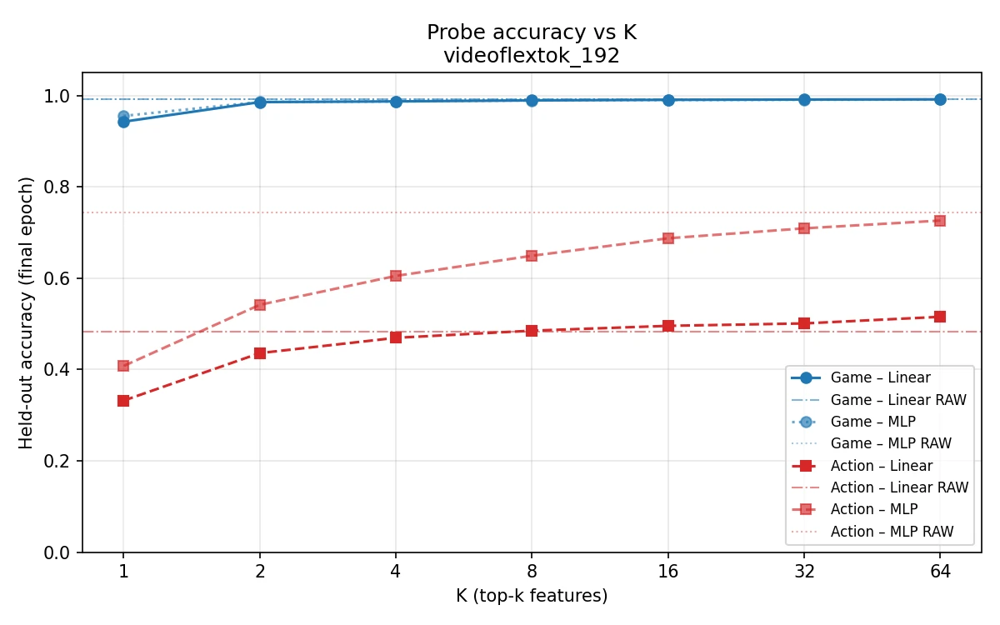
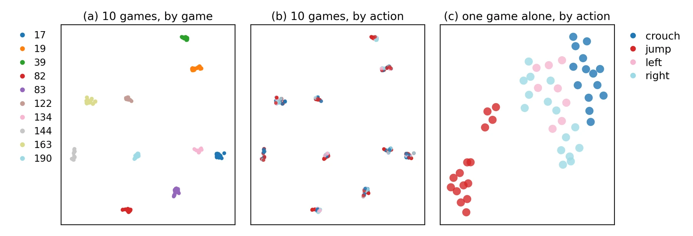

AdaWorld
LAMA Transformer autoencoder trained with a β-VAE objective. It compresses the change between two frames into a latent that a decoder uses to predict the second frame.
- Latent
- 32-d, continuous
- Input
- 2 frames · 256×256
- Size
- ~500M params
NeurIPS 2026 Workshop·PTA: From Pretrained Representations to Acting Agents
Latent action models do encode which action was taken, and a probe can read it out inside games it was trained on. But the mapping from latent to action does not carry over to new games: the same probe drops toward the majority-class baseline on games it has never seen. The strongest within-game action signal comes from a generic video tokenizer, not from either latent action model.
Retro action accuracy (%) for three encoders, 4 classes. Hover a bar for details.
Latent action models aim to make unlabeled video useful for learning controllable world models by inferring latent actions from visual transitions. For these latents to serve as reusable action representations, however, their semantics must remain consistent across changes in visual context and environment. We ask what action-related structure can be identified in pretrained latent action model representations, and whether this structure can support action prediction in known and unknown environments. We answer it as three nested questions: (i) how is action information encoded in the latents, (ii) is it decodable into actions inside a seen environment, and (iii) does the same decoder transfer to an environment never seen during probe fitting? We evaluate two recent latent action models, AdaWorld and Olaf-World, on a 193-game Stable Retro corpus and a subset of Open Pixels2Play. We find that action-label information is present, but it is weakly linearly separable and entangled with game-related variation. There is a substantial drop in action prediction performance on unseen environments compared to known environments. Moreover, a generic video tokenizer carries the strongest within-game action signal of any representation we test, suggesting that such decodability may reflect generic visual dynamics rather than an action-specific inductive bias of latent action models.
World models predict what happens next, given what an agent does. Most of them need action labels, which rules out the huge amount of video on the internet that has none. Latent action models (LAMs) such as Genie, LAPA, AdaWorld and Olaf-World get around this. They look at two frames, compress the visual change into a small latent vector, and use that vector in place of the missing action.

These latents are often described as action primitives. If that is true, a latent for move left should mean the same thing whatever the character, background, camera or game. We call this the atomic-action hypothesis and test it in video games, where we know the true action and can watch it being repeated across very different worlds.
Present, but weak The signal is real but only weakly linearly separable, and it is mixed in with information about the game.
Read Q1 →Yes Probes clear the baseline for every encoder, and deeper probes add 16–25 points.
Read Q2 →Largely no MLP-2 probes lose 30–33 points, and linear probes stay only modestly above chance.
Read Q3 →We freeze each pretrained encoder, extract a latent for every transition, and train small probes on top to predict the action. A probe is either linear (MLP-0) or a small MLP with one or two hidden layers (MLP-1, MLP-2).
A Transformer autoencoder trained with a β-VAE objective. It compresses the change between two frames into a latent that a decoder uses to predict the second frame.
Adds Seq∆-REPA, which aligns sequence-averaged latent actions with temporal feature differences from a frozen V-JEPA 2 encoder. The goal is consistent action meaning across visual contexts.
A general-purpose video tokenizer with no action objective at all. We repurpose it as a LAM by taking the latent frame aligned with the four action frames: up to 256 coarse-to-fine tokens × 6 channels.
We collected 193 2D platformers using Stable Retro: 98 NES, 63 SNES, 24 Master System, 7 Game Boy and 1 Atari 2600 title. Each game has 20 rollouts of 4,000 steps from a scripted controller. The task is a 4-way classification over right, left, crouch and jump.
Gameplay video from 3D games with keyboard labels. Several keys can be held at once, so the task is multi-label over 10 keys. We use the 291 sessions captured at 640×480 and split them 80/20. VideoFlexTok is not evaluated here because it needs multi-frame clips.


Action information is there, but as a thin, overlapping residual on top of a description of the scene.
Probes on null-transition latents fall to the majority baseline (~30%) at every depth and for every encoder. Game identity is not affected (98.7–99.2%). Only the action information disappears, and real latents beat the floor for all three encoders.
A few directions carry almost all the variance: 4 of 32 dimensions for AdaWorld and 16 of 32 for Olaf-World. On null pairs, where nothing happens, this structure is already there, and a real transition adds only two or three directions.
The best single coordinate's Fisher ratio is far below 1 for every encoder. The four action centroids are 0.22–0.43 apart, much closer than two samples that differ only in action (0.80 for AdaWorld, 1.07 for Olaf-World). The classes are nested rather than side by side, so no hyperplane can separate them cleanly.
| AdaWorld | Olaf-World | VideoFlexTok | |
|---|---|---|---|
| Null transition, linear | 30.3 | 30.4 | 30.4 |
| Null transition, MLP-2 | 30.6 | 30.6 | 29.3 |
| Real latent, linear | 45.1 | 48.7 | 65.6 |
| Best-coordinate Fisher ratio ? | 0.097 | 0.132 | 0.401 |
| Action centroid distances (min–max) | 0.22–0.42 | 0.25–0.43 | — |
| PCA components for 99% variance | 4 / 32 | 16 / 32 | 1218 / 1536 |
| … same, null transition | 1 / 32 | 14 / 32 | 1180 / 1536 |
One explanation is that the action information is there but spread across many dimensions, so no single coordinate captures it. To test this, we train top-k sparse autoencoders (SAEs) on the latents and look for individual sparse features that select for actions. Game identity serves as a positive control.





Yes, at every probe depth we test. Nonlinear probes help a lot, which is what you would expect when the action classes are nested.
| AdaWorld | Olaf-World | VideoFlexTok | |
|---|---|---|---|
| Retro · action accuracy (majority baseline 30.6–31.0%) | |||
| Linear | 45.1% | 48.7% | 65.6% |
| MLP-1 | 57.5% | 64.5% | 82.1% |
| MLP-2 | 70.4% | 73.9% | 82.2% |
| Retro · game accuracy (193 classes) | |||
| Linear | 75.8% | 83.8% | 99.2% |
| MLP-2 | 98.2% | 98.4% | 99.2% |
| Null transition, MLP-2 | 98.7% | 98.8% | 99.2% |
| P2P · multi-label, 10 keys | |||
| Exact match, linear | 26.0% | 43.9% | — |
| Exact match, MLP-2 | 56.8% | 63.9% | — |
| Micro F1, linear | 0.429 | 0.615 | — |
| Macro F1, linear | 0.226 | 0.434 | — |
Fitting one probe per game, accuracy ranges from that game's majority baseline up to 100% for every encoder. On P2P, per-key F1 roughly follows how often the key appears. Rare keys score near zero with a linear probe but improve with depth, so the information is there even when a linear probe misses it.
Game identity can be read linearly from the same latents (75.8–99.2%). A probe trained on all games can therefore first work out which game it is looking at and then apply a game-specific rule. The pictures below show exactly this.

Each view is one UMAP embedding of Retro latents from 10 games. Switch the colouring between game and action: the points stay where they are, and only the labels change. Every encoder groups by game.
Inside one game, the structure varies a lot. In some games the actions form partial clusters, and in others they barely separate. Both panels show VideoFlexTok latents coloured by action.
No. The extra capacity that helps inside the training games hurts on games the probe has never seen.
One fitted probe per line, scored on held-back samples from its 154 training games and on 39 games it has never seen.
| Within (154 games) | Cross (39 unseen) | ∆ | |
|---|---|---|---|
| Linear probe | |||
| AdaWorld | 45.3 | 42.2 | −3.0 |
| Olaf-World | 49.5 | 45.0 | −4.5 |
| VideoFlexTok | 66.5 | 53.2 | −13.3 |
| MLP-2 probe | |||
| AdaWorld | 71.1 | 40.8 | −30.3 |
| Olaf-World | 74.5 | 41.3 | −33.1 |
| VideoFlexTok | 82.6 | 50.9 | −31.7 |
Going from linear to MLP-2 adds 16–26 points inside the training games (tens of points for both LAMs) and removes points on held-out games for every encoder. The MLP appears to learn game-conditioned associations rather than a single rule that works in every environment.
Looking at each of the 39 held-out games, the median is close to the mean and the distribution is not bimodal. The probe beats most games' own majority class (85–95%), so it carries some information. It is still far from a usable control signal.
We compare the distance between latents with the same action in different games to the distance between latents with different actions in the same game. The ratio is above 1 for every encoder on Retro, so changing the game moves the latent more than changing the action.
| Mean | Min–Max | Median | Games above baseline | Entanglement ratio ? | |
|---|---|---|---|---|---|
| AdaWorld | 40.8 | 23.4–91.1 | 36.9 | 85% | 1.18 |
| Olaf-World | 41.5 | 23.4–81.1 | 39.3 | 85% | 1.34 |
| VideoFlexTok | 51.3 | 28.7–96.4 | 49.6 | 95% | 1.38 |
Is it just frame spacing? On Retro, the gap between the two frames depends on the action (11 frames for jump, 7 for left/right, 4 for crouch), which could give the probe an extra cue. We re-ran both LAMs with a fixed 4-frame spacing. The drop on unseen games remains: −23.9 (AdaWorld) and −25.1 (Olaf-World) points at MLP-2.
All three representations contain an action signal (Q1), and it can be decoded wherever the probe has seen the environment (Q2). A single fitted mapping from latent to action does not carry over to a new environment (Q3). In these models, action information is environment-specific.
Testing on held-out samples from known environments overstates how well a representation works as a transferable action interface. Probe capacity makes this worse. A linear probe gives the more honest estimate of what transfers.
Olaf-World beats AdaWorld on every probe, yet it has the higher entanglement ratio and the larger MLP-2 drop on unseen games (−33.1 vs −30.3 points). The conclusion does not depend on which LAM is stronger.
VideoFlexTok has no inverse-dynamics objective and no action supervision, yet it decodes Retro actions better than either LAM at every probe depth. Objective, width, input window and training data are all confounded here, so we report this as an observation. A natural next step is to use VideoFlexTok latents as the alignment target for a LAM.
@inproceedings{colombo2026decodable,
title = {Decodable, Not Transferable: Latent Actions Across Worlds},
author = {Colombo, Alessio and Lee, May and Oey, Elyanne and Kampono, Isabelle A. and
Frkovic, Stipe and Varghese, Dheeraj and Snoek, Cees G. M.},
booktitle = {NeurIPS 2026 Workshop on From Pretrained Representations to Acting Agents (PTA)},
year = {2026}
}